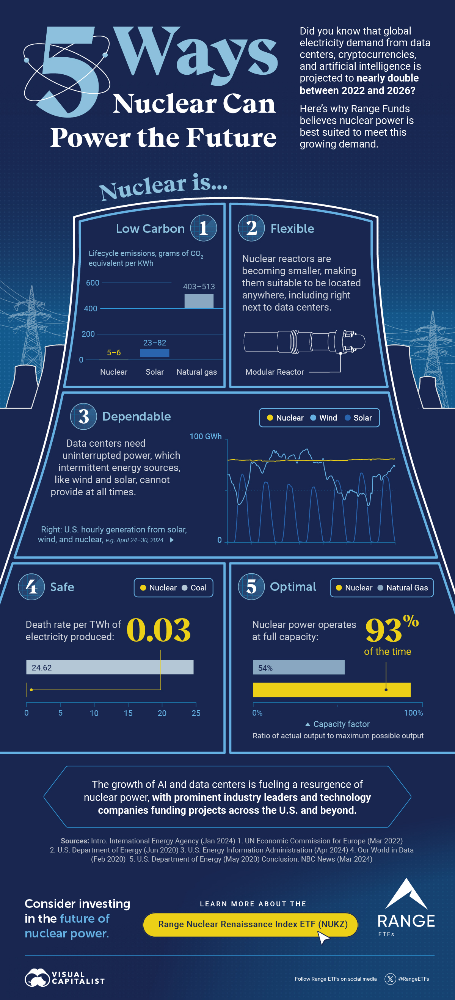
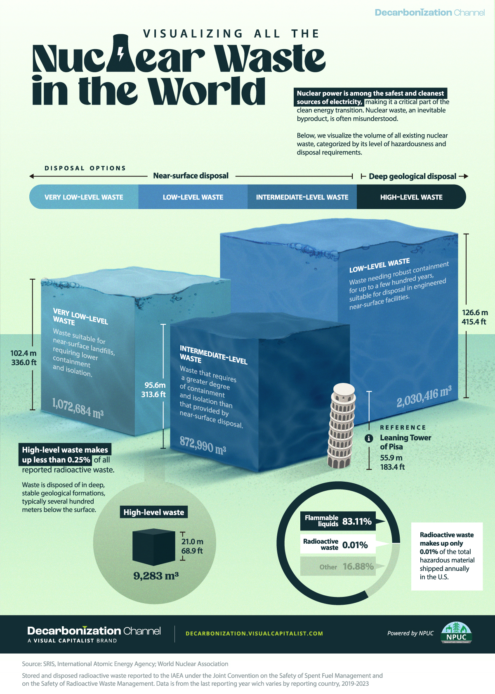
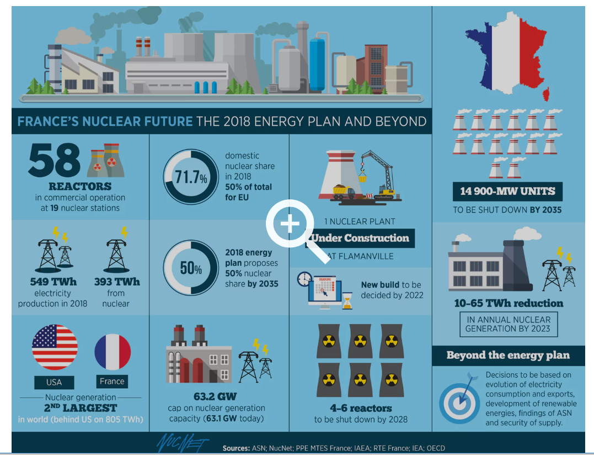
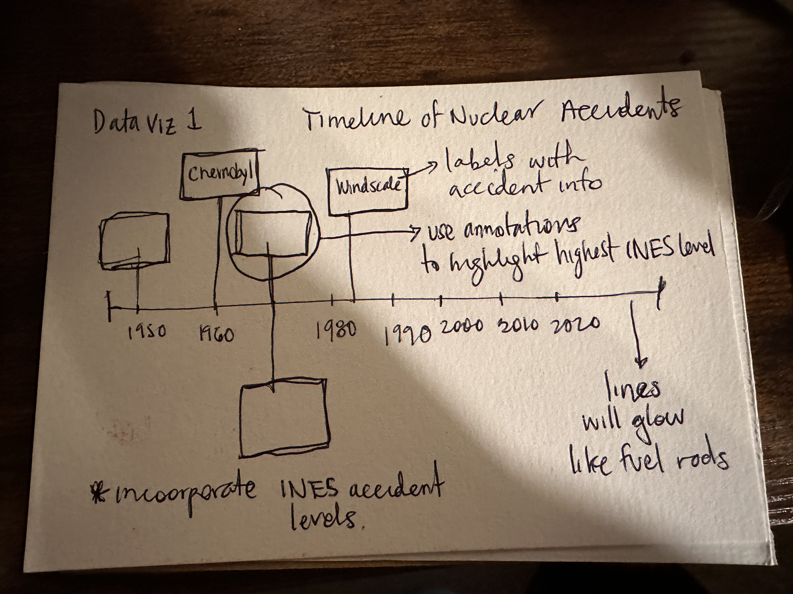
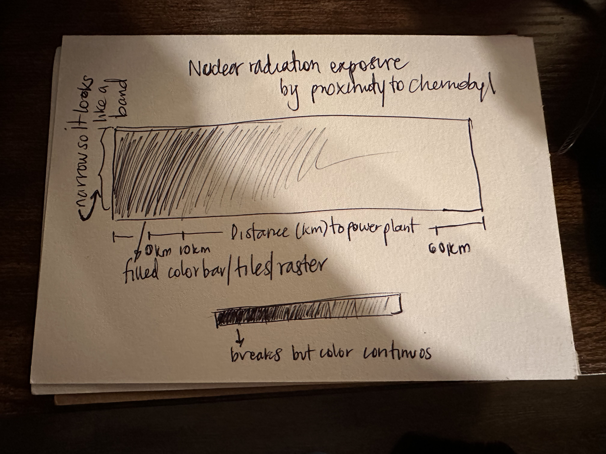
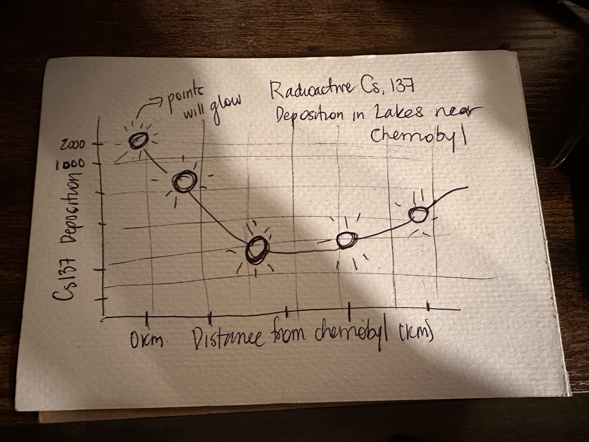
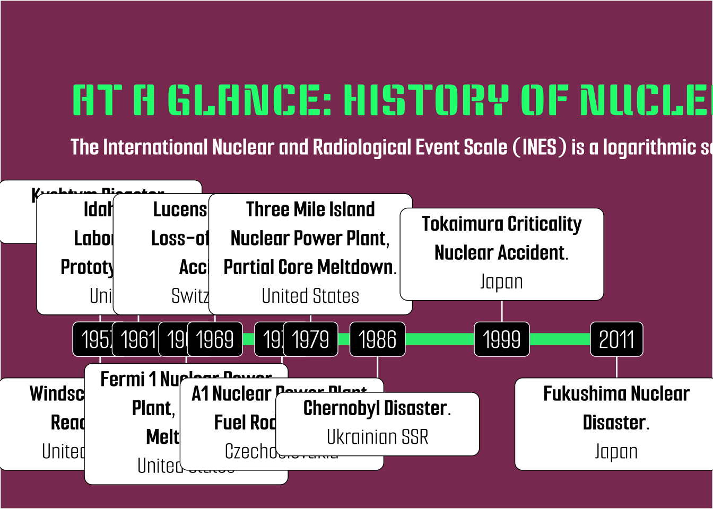
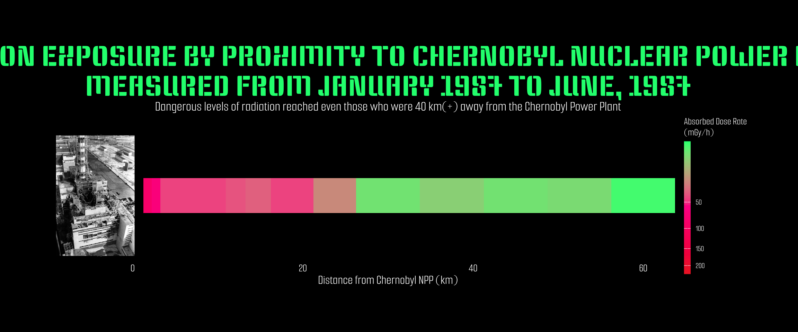
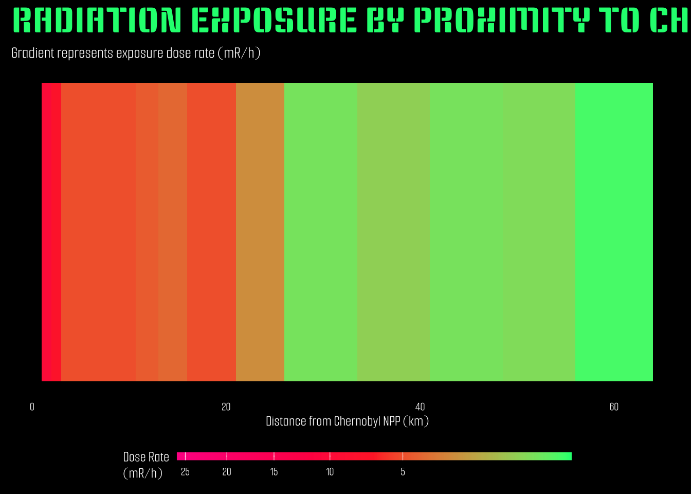

# Load libraries
library(here)
library(dplyr)
library(ggplot2)
library(janitor)
library(sf)
library(scico)
library(tidyverse)
library(htmltools)
library(ggrepel)
library(scales)
library(stringr)
library(lubridate)
library(ggimage)
library(ggfx)
library(ggtext)
library(sysfonts)
library(magick)
library(showtext)Assignment 3 (HW #3)
Nuclear Energy Infographic
Assigned Tue 02/11/2025 | Due Tue 02/25/2025
Questions
Which option do you plan to pursue? I plan to create an infographic, I have not changed my mind.
Restate your question(s). Has this changed at all since HW 1? If yes, how so? My main question is: “A History of Nuclear Accidents: Are costs of nuclear energy worth its benefits?”.
The main question has changed since HW1 because of the data available online. I initially wanted to answer an iteration of this question but specifically focused on non-financial costs of nuclear power. Subsequently, one of my data viz would summarize a post-Chernobyl human health study on thyroid cancer, but the data is not available to the public (since I can’t make a data viz about it, I will incorporate this information as annotations within the infographic instead). What is widely available (relatively) is data on soil, air and water concentrations of radionuclides in areas where major nuclear disasters have occurred.
Given the data that I’ve found, my 3 sub-questions will likely be: - How common are nuclear disasters? - How widespread was water contamination after the Chernobyl nuclear disaster? - How far did radiation contamination go after the Chernobyl nuclear accident?
- I will use the variables below to showcase the effect of just ONE of the nuclear accidents in history.
From the nuclear accidents dataset: - Nuclear accident description - Nuclear accident location - Nuclear accident date - Nuclear accident INES level With these variables I will create a timeline of the most important (INES level 4 and above) nuclear accidents in human history and will then highlight one (Chernobyl) to show how dangerous and destructive just ONE bad nuclear accident can be.
From the Chernobyl water chemistry dataset: - Distance from Chernobyl(km) - Cs-137 Deposition (kBq/m^2) I will visualize the level of Cesium contamination in waterways near the nuclear power plant
From the Chernobyl radiation exposure dataset: - Distance from Chernobyl(km) - Exposure dose rate (kBq/m^2) With this dataset and variables I will show how far and how high the levels of radiation reached one year AFTER the nuclear accident. Despite a year going by, the levels are beyond alarming and they still are today.
- Examples I am using as inspiration:
# paths
cooling_tower_path <- here("examples","cooling_tower.jpg")
france_path <- here("examples","france.png")
waste_path <- here("examples","waste.jpg")
knitr::include_graphics(cooling_tower_path)
knitr::include_graphics(waste_path)
knitr::include_graphics(france_path)
- Hand-drawn data viz
timeline_path <- here("samples","timeline_draft.jpg")
exposure_path <- here("samples","exposure_bar.jpg")
cesium_path <- here("samples","cesium.jpg")
knitr::include_graphics(timeline_path)
knitr::include_graphics(exposure_path)
knitr::include_graphics(cesium_path)
- Mock up of all my data viz ## Enable showtext_auto()
# enable showtext
showtext_auto()Load fonts
font_add_google(name = "Keania One", family = "ko")
font_add_google(name = "Smooch Sans", family = "ss")Load data
chernobyl_exposure <-read.csv(here("data","chernobyl_exposure_distance.csv")) %>%
clean_names()
chernobyl_water <- read.csv(here("data","chernobyl_water_chem.csv")) %>%
clean_names()
nuclear_accidents <- read.csv(here("data","nuclear_accidents.csv") ) %>%
clean_names() Wrangle Chernobyl exposure rate data
# drop NA's
chernobyl_exposure <- chernobyl_exposure %>%
filter(!is.na(exposure_dose_rate_m_r_h)) Wrangle nuclear accidents data
# filter to INES levels of interest
nuclear_accidents <- nuclear_accidents %>%
filter(ines_level >= 4) %>% # filter to accidents of INES level 4-7
filter(!is.na(ines_level)) %>% # drop if ines_level = NA
mutate(description = paste(incident, location, sep = ",\n "))
# make "date" col into date object, set "orders" to all possible date formats in the df
nuclear_accidents$date <- year(as.Date(parse_date_time(nuclear_accidents$date, orders = c("m/d/Y","d/m/Y"))))# add nuclear symbol to df
nuclear_accidents$image <- rep(c(here("samples","nuclear_symbol.png")), 10)
# name background image object
background <- "https://miro.medium.com/v2/resize:fit:4800/format:webp/1*hL391IqaaorQv-c5-a5w-w.jpeg"
# heights for milestones.
nuclear_accidents$positions <- c(0.13, -0.1, 0.09, -0.05, .05, -.1, .09, -.05, .05, -.05)
# set the directions for each accident, aka above and below timeline
nuclear_accidents$directions <- c(1, -1) Create timeline of nuclear accidents
timeline <- ggplot(nuclear_accidents, aes(x = date, y = positions, label = description)) +
theme_classic() +
# horizontal timeline
with_outer_glow(
geom_hline(yintercept = 0,
color = "springgreen",
alpha = 0.9,
linejoin = "round",
linewidth = 3,
show.legend = FALSE),
colour = "springgreen",
sigma = 2,
expand = 1) +
# lines conencting accident to timeline
with_outer_glow(
geom_segment(data = nuclear_accidents, aes(y = positions,
yend = 0,
xend = date),
linewidth = 1,
color = "springgreen"),
colour = "springgreen",
sigma = 2,
expand = 0.5) +
# year labels on timeline
geom_label(aes(x = date,
label = date,
y = 0),
fill = "black",
color = "white",
family = "ss",
size = 7,
show.legend = FALSE) +
geom_point(aes(y = positions), size = 1) +
# imagine to replace data points
# geom_image(image = nuclear_accidents$image[1],
# size = 0.4,
# nudge_x = -0.025) +
# text boxes that are html friendly, accident description
geom_textbox(aes(label = str_wrap(
paste0("<b><span style='color:black;'>",incident,".</b>", tags$br(), location))),
fill = "white",
color = "black",
size = 5,
family = "ss",
width = 0.2,
halign = 0.5,
valign = 0.5,
show.legend = TRUE
) +
labs(title = "AT A GLANCE: HISTORY OF NUCLEAR ACCIDENTS",
subtitle = "The International Nuclear and Radiological Event Scale (INES) is a logarithmic scale with 7 levels. Levels 4-7 are reserved for high-impact accidents") +
theme(
plot.title = element_text(family = "ko",
margin = margin(t = 0, r = 0, b = 10 , l = 0, unit = "pt"),
size = 30,
color = "springgreen"),
plot.subtitle = element_text(family = "ss",
size = 20,
color = "white",
margin = margin(t = 0, r = 0, b = 30 , l = 0, unit = "pt")),
plot.title.position = "plot",
axis.text.y = element_blank(),
axis.title.y = element_blank(),
axis.line.y = element_blank(),
axis.text.x = element_blank(),
axis.ticks = element_blank(),
axis.title.x = element_blank(),
axis.line.x = element_blank(),
legend.text = element_text(color = "black"),
# legend.direction = "horizontal",
# legend.position = "bottom",
panel.background = element_rect(fill = "black"),
plot.background = element_rect(fill = "black"),
plot.margin = margin(t = 70, r = 100, b = 70, l = 100, unit = "pt")) +
coord_cartesian(clip = "off")Warning in geom_hline(yintercept = 0, color = "springgreen", alpha = 0.9, :
Ignoring unknown parameters: `linejoin`# timeline <- ggbackground(timeline, background, alpha = 0.1)
ggsave("timeline.png",
plot = timeline,
device = "png",
width = 10,
height = 12,
units = "cm",
dpi = 300
)
timeline 
Create exposure data viz
exposure <- ggplot(chernobyl_exposure, aes(
x = distance_from_ch_npp_km,
y = 1,
fill = exposure_dose_rate_m_r_h
)) +
geom_tile(width = 8, height = 1) +
scale_fill_gradientn(
colours = c("springgreen","deeppink", "firebrick2"),
name = "Dose Rate\n(mR/h)",
transform = "sqrt"
) +
guides(fill = guide_colorbar(
barwidth = 20,
barheight = 0.4,
reverse = TRUE)
) +
labs(
title = "RADIATION EXPOSURE BY PROXIMITY TO CHERNOBYL NUCLEAR POWER PLANT MEASURED FROM JANUARY 1987 TO JUNE, 1987",
subtitle = "Dangerous levels of radiation reached even those who were 40 km(+) away from the Chernobyl Power Plant",
x = "Distance from Chernobyl NPP (km)",
y = NULL
) +
theme_minimal(base_family = "ss") +
theme(
plot.background = element_rect(fill = "black"),
panel.grid = element_blank(),
axis.text.y = element_blank(),
axis.ticks.y = element_blank(),
axis.title.y = element_blank(),
axis.text.x = element_text(color = "white"),
axis.title.x = element_text(color = "white"),
plot.title = element_text(color = "springgreen", size = 25, family = "ko"),
plot.subtitle = element_text(color = "white", size = 12),
legend.title = element_text(color = "white"),
legend.text = element_text(color = "white"),
legend.position = "bottom",
legend.direction = "horizontal"
)
exposure
Create water contamination data viz
water <- ggplot(chernobyl_water, aes(x = distance_from_cnpp_km, y = x137cs_deposition_k_bq_m2)) +
# trend line with glow
with_outer_glow(
geom_smooth(method = "loess", se = FALSE, color = "deeppink", size = 1.5),
colour = "deeppink",
sigma = 5,
expand = 1
) +
# lakes as points
with_outer_glow(
geom_point(size = 6, color = "black"),
colour = "deeppink",
sigma = 3,
expand = 3
) +
scale_y_continuous(trans = "sqrt") +
# Labels
labs(
title = "Radioactive Cesium-137 Deposition",
subtitle = "Distance from Chernobyl NPP vs Deposition (kBq/m²)",
x = "Distance from Chernobyl NPP (km)",
y = "Cs-137 Deposition (kBq/m²)"
) +
theme(
plot.background = element_rect(fill = "black", color = NA),
panel.background = element_rect(fill = "black", color = NA),
panel.grid = element_line(colour = "springgreen",
linewidth = 0.1),
axis.title = element_text(color = "deeppink", size = 14, family = "ss"),
axis.text = element_text(color = "white", size = 12, family = "ss"),
plot.title = element_text(color = "deeppink", size = 20, family = "ko"),
plot.subtitle = element_text(color = "white", size = 14, family = "ss"),
plot.margin = margin(1, 1, 1, 1, "cm")
)Warning: Using `size` aesthetic for lines was deprecated in ggplot2 3.4.0.
ℹ Please use `linewidth` instead.ggsave("chernobyl_water_glow.png", plot = water, width = 10, height = 6, dpi = 300)`geom_smooth()` using formula = 'y ~ x'water`geom_smooth()` using formula = 'y ~ x'
- Answer questions about the mock ups
- What challenges did you encounter or anticipate encountering as you continue to build / iterate on your visualizations in R? If you struggled with mocking up any of your three visualizations (from #6, above), describe those challenges here.
Some of the main challenges were making decisions on what style or theme I wanted to use across my mock ups. I wanted to start creating the theme now rather than wait until homework 4 because I figured it would save me time down the line. I spent a lot of time trying different things. It was also a challenge to research and adopt packages and techniques to make my ideas come true but it was also the part of the homeowork that I had most fun with/inspired me the most.
- What ggplot extension tools / packages do you need to use to build your visualizations? Are there any that we haven’t covered in class that you’ll be learning how to use for your visualizations?
Yes, there are several that I used that we did not cover in class. Packages: - (scico) - (htmltools) - (ggimage) <- I cannot remember if we covered this one? - (ggfx) - (magick)
- What feedback do you need from the instructional team and / or your peers to ensure that your intended message is clear?
I would particularly appreciate feedback on the cohesiveness of the aesthethic choices I have made thus far. I was also consdering including the art of some really cool nuclear power artists that I found but I could not think of the right place or the right way to showcase them. Any ideas on this would be greatly appreciated! I would also like feedback on how much context I should include in my infographic / data viz since nuclear energy is a rather technical topic and I understand that this is not everyones’ special itnerest!